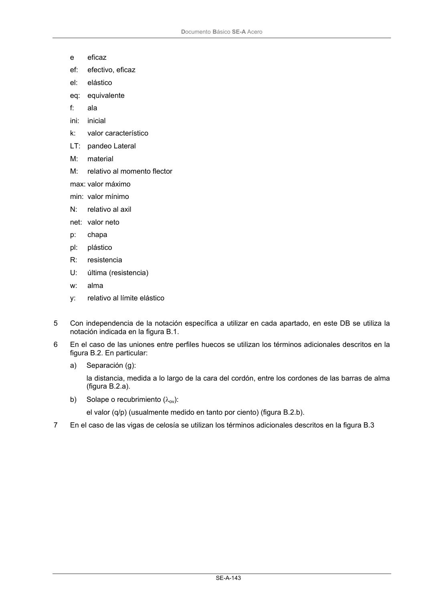

DB-SE-A Acero · edición 2007-10-23 · capa oficial
Documento DB-SE-A-oficial · SHA-256 del PDF 9ed9ea694aabfbda3bfbbef40dfe9223fde05d13c35bc2ba9751e5a96a22a64f
Página física 145 de 168.
Copia fiel del PDF fuente · Fuente oficial
Ficha de la disposición en la fuente oficial
Formato: Texto de la página (Markdown)
Documento Básico SE-A Acero SE-A-143 e eficaz ef: efectivo, eficaz el: elástico eq: equivalente f: ala ini: inicial k: valor característico LT: pandeo Lateral M: material M: relativo al momento flector max: valor máximo min: valor mínimo N: relativo al axil net: valor neto p: chapa pl: plástico R: resistencia U: última (resistencia) w: alma y: relativo al límite elástico 5 Con independencia de la notación específica a utilizar en cada apartado, en este DB se utiliza la notación indicada en la figura B.1. 6 En el caso de las uniones entre perfiles huecos se utilizan los términos adicionales descritos en la figura B.2. En particular: a) Separación (g): la distancia, medida a lo largo de la cara del cordón, entre los cordones de las barras de alma (figura B.2.a). b) Solape o recubrimiento (λov): el valor (q/p) (usualmente medido en tanto por ciento) (figura B.2.b). 7 En el caso de las vigas de celosía se utilizan los términos adicionales descritos en la figura B.3
